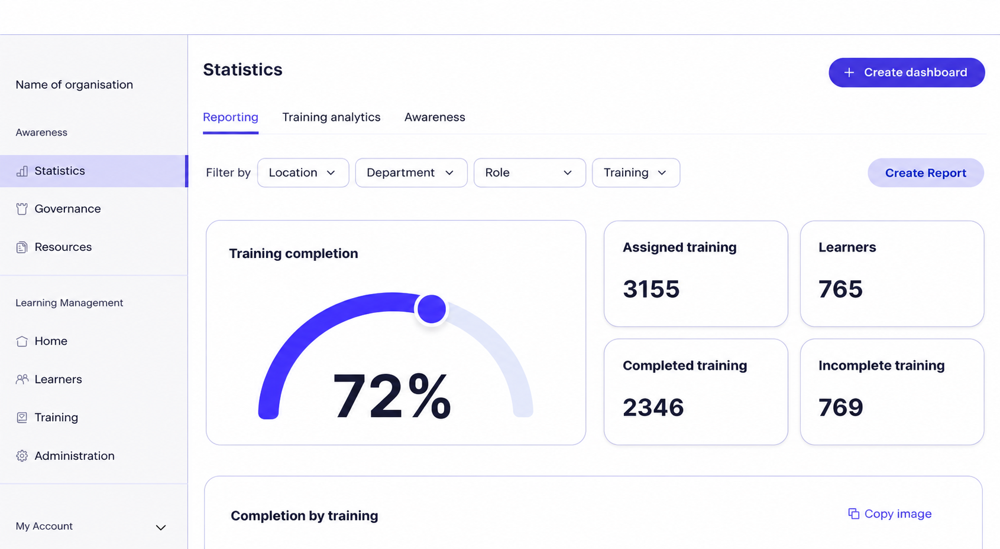

lawpilots LMS+
2023–2026 · Product Manager, then Senior Product Manager

Context
Lawpilots had established enterprise customers, but the business was largely built around selling compliance courses. Customising and producing courses for different clients took significant effort, while customers also needed help managing training across their organisations—assigning it, tracking participation, reporting on completion, and fitting learning into their existing workflows. We saw an opportunity to move from providing content alone to offering a more complete, scalable solution.
Product approach
I conducted customer interviews, usability testing, competitive analysis and market research, combining qualitative insights with product usage data to shape priorities and validate solutions.
- Launched an AI-powered content workbench supporting six content types, with human review and quality-control steps.
- Developed multi-tenant account structures, parent and subaccounts, permissions and reporting visibility.
- Improved onboarding, registration, SSO and account access, including enterprise identity integrations.
- Reshaped product packaging and subscription pricing.
Contribution
I owned product strategy and end-to-end delivery as sole Product Manager in an 11-person cross-functional team. I worked with Engineering, Data Science, Analytics, Design and commercial stakeholders across discovery, requirements, AI evaluation, prioritisation and success metrics.
I established a more structured product operating model as the platform transitioned from early-stage development toward scale, improving discovery, roadmap planning, requirements, documentation and cross-functional decision-making.
The team grew from 2 to 11, and I mentored a Junior Product Manager for two years.
Outcomes
150+SKUs consolidated into clearer subscription packages
88%CSAT following Customer Success pipeline restructuring